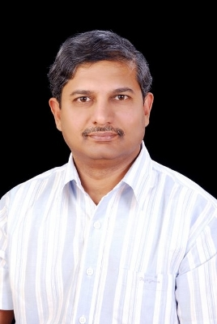

Successor of Sri Ch. Rajeshwara Rao - Dr.Ramesh Chennamaneni
Dr. Ramesh Chennamaneni has been active in development work since the beginning of 1990 in Siricilla region of Karimnager district. In his stay of 20 years in India before he left for Germany, he was a witness of a number of social changes and development problems in Karimnager district. This has been possible because of he being the son of Sri. Ch. Rajeshwara Rao, freedom fighter and an ardent organizer and supporter of people,s movements in Telangana region. Among others, it is under the leadership of Sri Ch. Rajeshwara Rao about 25 lakh tenants of the Telangana region could become owner farmers.
After completing his studies and doctoral work in Germany, Dr. Ramesh has set up an NGO in Germany along with a large group of young people to help his motherland. It was the abject poverty, lack of basic amenities and lack of collective action in the region which made him to find solutions for a number of problems along with local people. Dr. Ramesh could convince 138 villages and the people there to join hands in solving the drinking water problem. About 2 lakh people in Sircilla region could be provided with drinking water. This agenda was basically set by women. Their second agenda was improvement of school infrastructure. In about 180 villages school buildings (4 junior colleges), sanitation facilities, furniture and science equipment were provided with peoples participation. The fact that 75 000 people of Sircilla gets drinking water today lies in the
|

|
|
Indo-German Project implemented right in the beginning of ninetees. New Water works in Manair and a Overhead tank with one million liter capacity stand today as a living example of consistent development efforts. It is the credit of Dr. Ramesh that Vemulawada town has an excellent drainage system(26,000 meters) effectively functioning today. The fact that Vemulawada Gudi Cheruvu has plenty of water is the result of recently completed feeder channel from Mula Vaagu, which also goes to his credit.
|
Also in providing irrigation facilities, resource management, self employment schemes excellent results have been achieved. Tens and thousands of people have found sustainable livelihoods (see projects list as Annex). For example, in one of the most backward Sanugula village in Chandurthy mandal, one Crore was spend to make this village a model one. Irrigation facilities, watershed development, drinking water and education facilities made the villagers not only to stay in their own village but also those who migrated to Gulf have returned back to make their village their permanent home. Self employment was created through carpenter societies, powerloom societies, small scale irrigation and thrift groups. In one of the recent programmes, all villages in the region are going to get their own purified drinking water plants so that they can supply their populations at 2 Rs per 20 Liters of purified Water. This successful scheme is presently supplying 65 000 people with excellent quality of water, which is also affordable to agricultural labourers and artisans.
Given this background and a strong political and social commitment for his people and his Telangana region, Dr. Ramesh Chennamaneni has decided to enter practical politics. Achieving Telangana state and Reconstruction of Telangana are the key focus areas where he proposes to contribute actively in the future. At a time when politics have indeed become a very hard terrain, all the young generation, elderly and experienced has strongly supported him to become the MLA for Vemulawada constituencty.
Dr. Ramesh Chenamaneni, entered into active politics in the year 2009 as a successor to Sri Ch. Rajeshwars Rao garu. He is presently serving as the MLA of Vemulawada constituenty, continuosly offering his services.
Major Projects initiated/supported by Ch. Ramesh in Siricilla division, Karimnagar:
- Cooperative Lift Irrigation Project in Avunoor, AP, India 1991 (Financed by German Development Ministry; Total Outlay 10 Lakhs)
- Biological Waste-Management Through Piggery Keeping, Marupaka, AP, India 1993/1994 (Finanzed by Ministry of Environment, Germany; Total Outlay 10 Lakhs)
- Drinking Water and Drainage System for Sircilla Town, A.P., India 1994-1998 (Financed by German Development Ministry and Government of Andhra Pradesh, India; Total Outlay 3 Crores)
- Drinking Water for 138 Villages in Drought Prone Sircilla Division, A.P., India, 1996-2002 (Financed by German Development Ministry and Government of Andhra Pradesh, India; Total Outlay 7 Crores)
- Improvement of Learning Conditions in Rural Schools and Vocational Training Centers in Karimnager District, India 1998-2003 (Financed by Europian Union, NSB Foundation and Government of Andhra Pradesh, India; Total Outlay 4.7 Crores)
- Establishment of Junior Colleges at Siricilla (Girls), Rudrangi and Boinpally, Karimnager District, India (Financed by NSB Foundation; 1997 and 2001; Total Outlay 60 Lakhs)
- Cooperative Lift Irrigation Project in Anupur and Bonala, Karimnager District, India 1998 (Financed by German Development Ministry and Local Cooperatives; Total Outlay 15 Lakhs)
- Drainage and Environmental Sanitation for Vemulawada Town (Financed by German Development Ministry and Govt. of Andhra Pradesh, India, 1999-2005; Total Outlay 3.5 Crores)
- Powerloom Cooperative Societies at Sircilla, Tadagonda and Boinpally (Financed by German Development Ministry, 1996, 2000, 2001; Total Outlay 50 Lakhs)
- Self Employment Schemes (Carpenter Societies, Piggery Farms, Dairies) in Sircilla Region, Nagaram and Vemulawada (Financed by NSB Foundation, 1995, 1996, 2001, 2003; Total Outlay 30 Lakhs)
- Drought Relief in Sircilla and Vemulawada Region, Karimnager District, India (Financed by GSE and Govt. of AP, India; 1999-2004; Total Outlay 1.0 Crore);
- Aids Eradication and Rehabilitation Project in Karimnager District, India (Financed by Bill and Milinda Gates Foundation; Since 2004; Total Outlay 2.0 Crores) (on-going)
- Cooperative Natural Resource Management for Sustainable Agriculture and Poverty Alleviation, Karimnager District, India (Financed by European Union and Govt. of AP, India; 2002-2009; Total Outlay 20 Crores) (on-going)
- Indo-German Watershed Development Project in Karimnager, Warangal and Medak Districts, AP, India (Financed by KfW Bank, Germany and NABARD, Govt. of India; 2003-2011; Total Outlay 50 Crores) (Implemented by NABARD & Local NGO’s) (on-going)
- Purified Drinking Water Plants for Floride Effected Villages in Upland Areas of Karimnagar District (Financed by GSE, Naandi Foundation and Govt. of AP; 2008 – 2010; Total Outlay 3 Crores) (on-going)
- Rehabilitation and Livelihood Security for Gulf Migrants, Karimnager District, AP, India (Project Proposed to European Union and Govt. of AP; 2008-2012; Total Financial Outlay 5 Crores)